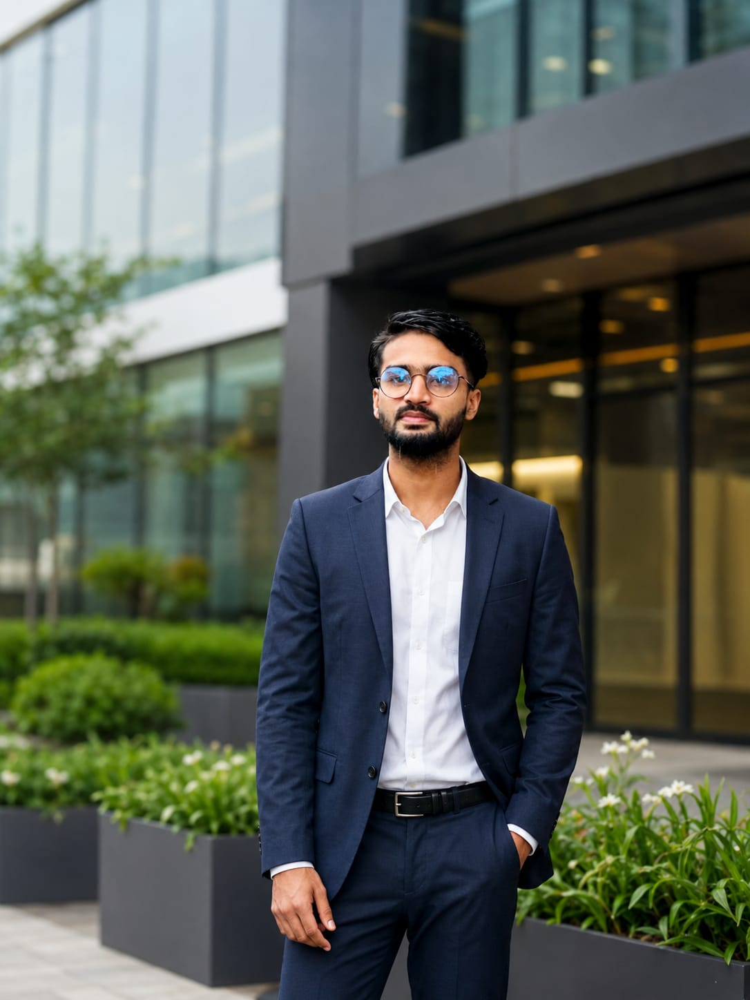

SEO Audit & Strategy
A full review of your website, technical health, content, backlinks and competitors, turned into a prioritized action plan.
I'm Mynul Islam, a Local SEO Expert and AI Search Specialist. I help local businesses, SaaS companies and ecommerce brands improve visibility, attract qualified traffic and turn search into leads.
Request a Free SEO Audit View Results

About Me
I'm Mynul Islam, a Local SEO Expert based in Narayanganj, Dhaka, Bangladesh. Since 2021 I've worked with businesses in the USA, UK, Australia and the UAE, improving their Google Maps visibility, organic rankings and the number of leads they receive from search.
Search is changing, but SEO is not going away. I combine proven Local and Technical SEO fundamentals with AEO, GEO and AI Overviews optimization, so your business can be found, understood and trusted across traditional and AI-powered search.
Finding SEO problems is easy. Prioritizing the few that actually affect results is where experience matters, and that is how I work. No recycled advice and no ranking guarantees.
SEO Services
From local rankings to technical fixes and AI search readiness, each service is built around your goals and your market.
A full review of your website, technical health, content, backlinks and competitors, turned into a prioritized action plan.
Google Maps and 3-Pack ranking strategy, local landing pages, service-area targeting and local search visibility.
Categories, services, descriptions, posts, photos and Q&A optimized to turn profile views into calls and visits.
Consistent business listings, NAP cleanup and a steady review process that builds local trust.
Crawlability, indexation, site architecture, page speed, Core Web Vitals, schema markup and technical issue fixes.
Title tags, meta descriptions, headings, URLs, internal links and page structure aligned with search intent.
Search-focused service pages, blog content and topic clusters written to answer real customer questions.
Relevant, quality backlinks and authority-building activity that strengthens your domain.
Commercial keyword targeting, search intent mapping and competitor gap analysis.
Category and product page optimization, site structure and technical SEO for Shopify, WooCommerce and Magento.
Feature, use-case and comparison pages plus content that attracts qualified, high-intent organic traffic.
Clear, structured content and entity signals that improve your chances of being found and cited in AI-powered search.
Monthly reporting on rankings, traffic, calls and leads using Google Search Console and analytics tools.
A joined-up organic growth plan that connects SEO, content and local presence to business goals.
Who I Help
Different business models need different SEO. I tailor the strategy to how your customers search and buy.
Businesses that depend on customers in their area for calls, visits and bookings.
Software companies that want qualified organic demand instead of relying only on paid ads.
Online stores that want category and product pages that rank and convert.
Results
Client names are kept private. These results come from projects I worked on.
 Local SEO · USA
Local SEO · USA
3–4 → 25+ calls/month
Within 90 days, through improved local rankings and restructured on-page SEO.
 Ecommerce SEO · Australia
Ecommerce SEO · Australia
+150% organic traffic
In 6 months, with product and category SEO, on-page structure and page speed improvements.
 Local SEO · UAE
Local SEO · UAE
Google Local 3-Pack in 3 months
Achieved with Google Business Profile optimization, NAP consistency and a review strategy.
 Organic Growth · USA
Organic Growth · USA
2× organic traffic in 6 months
Optimized service pages, blog content and authority backlinks led to 3–4 new projects a month from organic search.
My SEO Process
Every project follows the same structured path, so you always know what is happening and why.
We start by understanding your business, your customers and where your website stands in search today.
Findings become a measurable plan that targets the searches most likely to bring customers.
Your website and profiles are improved so search engines and customers understand exactly what you offer.
Helpful content and relevant off-page work build the authority and trust that support rankings.
Results are tracked continuously, and the strategy is refined based on real data.
FAQ
Local SEO helps a business appear in Google Maps and local search results when nearby customers search for its services.
AEO (Answer Engine Optimization) and GEO (Generative Engine Optimization) help your business get found and cited in AI-powered answers, such as AI Overviews and chat-based search.
It depends on competition, location and the current state of your website and profile. Many businesses see movement within a few months, but no specific ranking can be guaranteed.
Yes. I work with local businesses, SaaS companies and ecommerce brands, including Shopify, WooCommerce and Magento stores.
Yes. I work remotely and have delivered projects for businesses in the USA, UK, Australia and the UAE.
Get Started
Share your website and business goals, and I'll review your current search presence and outline practical next steps for growth.
Request a Free SEO Audit WhatsApp